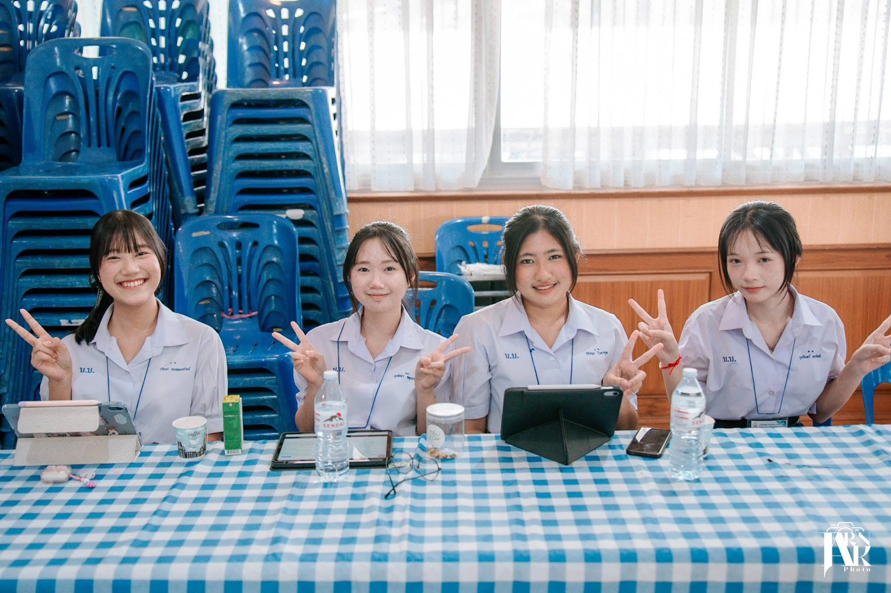
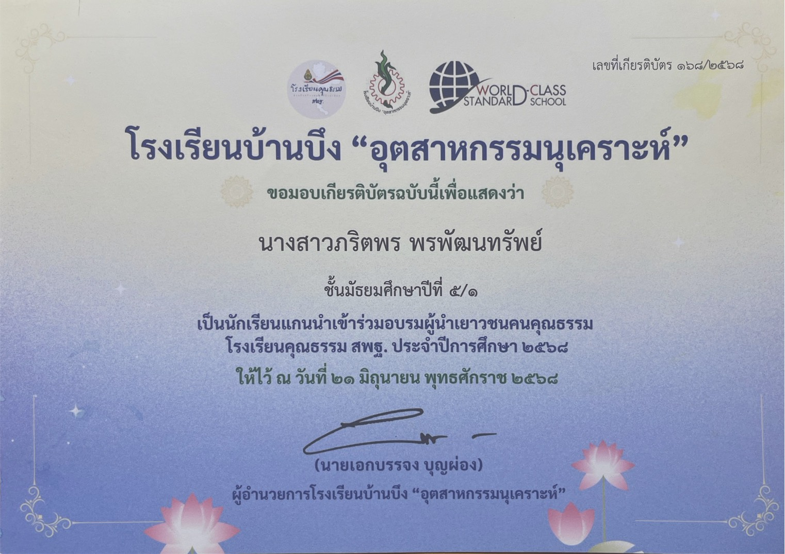
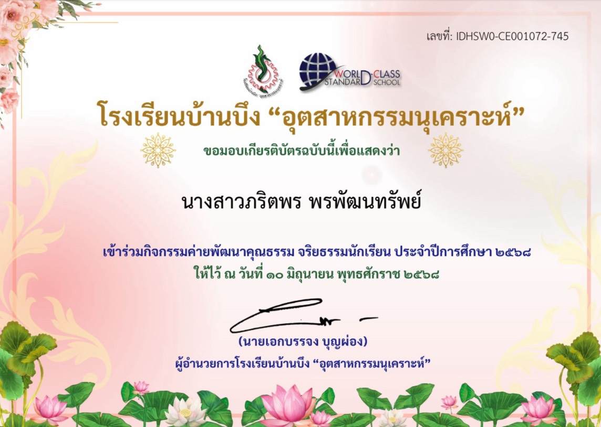
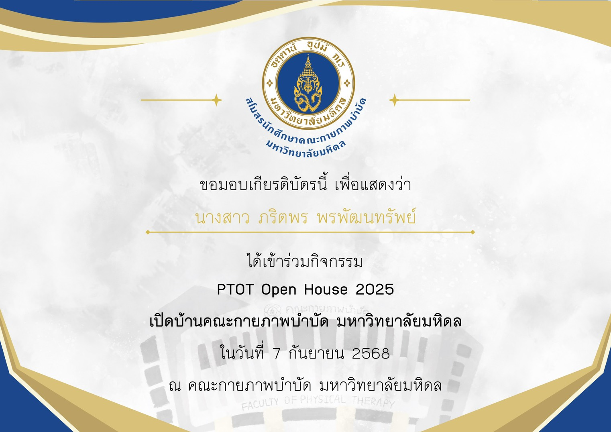
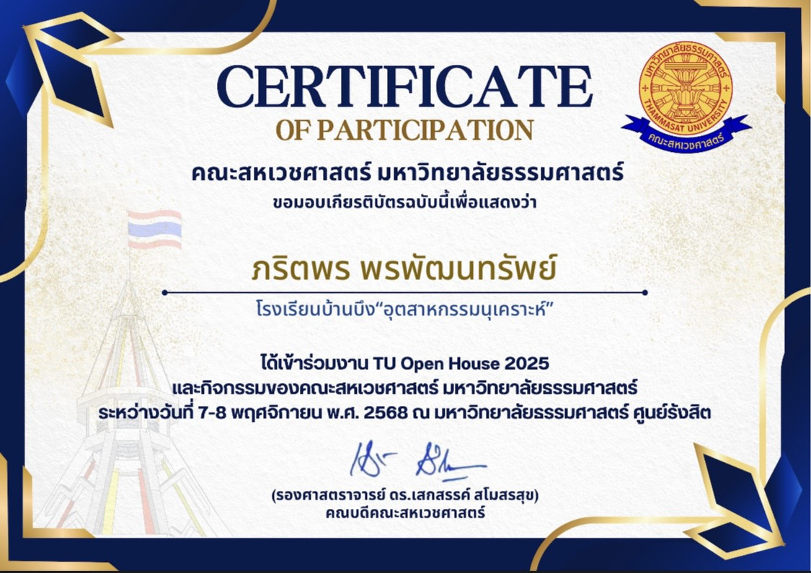

👤 ประวัติส่วนตัวและการศึกษา (About Me & Education)
ชื่อ-นามสกุล: นางสาวภริตพร พรพัฒนทรัพย์ (Parittaporn Pornpattanasap)
โรงเรียน: โรงเรียนบ้านบึง "อุตสาหกรรมนุเคราะห์" (จังหวัดชลบุรี)
แผนการเรียน: วิทยาศาสตร์-คณิตศาสตร์ (MSEP)
เกรดเฉลี่ยสะสม (GPAX): 3.71
คติประจำใจ: "ไม่แข่งกับใคร แค่ทำให้ดีกว่าตัวเองเมื่อวานก็พอ"
💡 ทักษะและความสามารถ (Skills)
🏛️ การเข้าร่วมเปิดบ้านและค่ายแนะแนวศึกษาต่อ (Open House & Camps)
มุ่งมั่นค้นหาตัวเองผ่านการเข้าร่วมกิจกรรมเปิดบ้านวิชาการและค่ายแนะแนวของมหาวิทยาลัยชั้นนำ:
🎓 ผลงานวิชาการและการพัฒนาตนเอง (Academic & Self-Development)
-
🔬
เข้าร่วมการสอบแข่งขันโครงการส่งเสริมการโอลิมปิกวิชาการ (สอวน. POSN)
ศูนย์สอบมหาวิทยาลัยบูรพา — มุ่งมั่นพัฒนาศักยภาพและความรู้ความสามารถทางวิชาการ
-
💻
หลักสูตร "อุ่นใจไซเบอร์" (Fundamental Level)
ผ่านการอบรมโครงการส่งเสริมการเรียนรู้หน้าที่พลเมืองดิจิทัล โดย สพฐ. ร่วมกับ มจธ., กรมสุขภาพจิต และ AIS
-
🛡️
หลักสูตรต้านทุจริตศึกษา (ระดับชั้น ม.4)
ผ่านการเรียนและทดสอบรายวิชาเพิ่มเติมการป้องกันการทุจริต โดย สำนักงาน ป.ป.ช.
-
🇬🇧
ผ่านการเรียนพัฒนาทักษะภาษาอังกฤษออนไลน์ (English Nirin)
พัฒนาทักษะภาษาอังกฤษเพื่อการสื่อสาร การอ่าน และทักษะพื้นฐานทางไวยากรณ์อย่างต่อเนื่อง
-
📐
การเรียนรู้และเตรียมความพร้อมทางวิชาการ (SmartMathPro)
เสริมสร้างทักษะการคิดวิเคราะห์ คำนวณ และการแก้โจทย์ปัญหาอย่างเป็นระบบ
📌 ผลงานและกิจกรรม (Activities & Projects)
งานศิลปหัตถกรรมนักเรียน ครั้งที่ 72


รายละเอียด: ได้รับรางวัลระดับเหรียญทอง กิจกรรมการประกวดโครงงานอาชีพ ระดับชั้น ม.4 - ม.6 ระดับสำนักงานเขตพื้นที่การศึกษา
🔍 ดูเกียรติบัตร / รายละเอียดกิจกรรมจิตอาสารามาธิบดี (16 ชั่วโมง)


รายละเอียด: เข้าร่วมปฏิบัติงานจิตอาสาสนับสนุนและอำนวยความสะดวกแก่ผู้ป่วยและผู้มาใช้บริการ ณ โรงพยาบาลรามาธิบดี รวมระยะเวลา 16 ชั่วโมง
🔍 ดูเกียรติบัตร / รายละเอียดคณะกรรมการประจำห้องรับรองครูผู้ควบคุมทีม


รายละเอียด: ปฏิบัติหน้าที่คณะกรรมการประจำห้องรับรองครูผู้ควบคุมทีมการแข่งขัน ศูนย์การแข่งขันกิจกรรมคอมพิวเตอร์
🔍 ดูเกียรติบัตร / รายละเอียดอบรมการปฐมพยาบาลฉุกเฉินและการกู้ชีพขั้นพื้นฐาน (CPR & AED)


รายละเอียด: ผ่านการอบรมเชิงปฏิบัติการ การปฐมพยาบาลฉุกเฉินและการกู้ชีพขั้นพื้นฐาน (Emergency First Aid and Basic Life Support Training)
🔍 ดูเกียรติบัตร / รายละเอียดโครงการทริปอาสาปลูกป่าฮีลใจไปกับพี่


รายละเอียด: เข้าร่วมโครงการทริปอาสาปลูกป่าลงพื้นที่ฟื้นฟูธรรมชาติและอนุรักษ์สิ่งแวดล้อม ณ จังหวัดฉะเชิงเทรา
🔍 ดูเกียรติบัตร / รายละเอียดค่าย IS THIS GOOD V.3 # ASK YOUR HEART


รายละเอียด: เข้าร่วมค่ายส่งเสริมคุณธรรมและจิตสำนึก "ให้รู้กตัญญู รักษาคุณความดีสืบไป"
🔍 ดูเกียรติบัตร / รายละเอียดการแข่งขันประกวดคำขวัญต่อต้านการทุจริต

เข้าร่วมการแข่งขันประกวดคำขวัญต่อต้านการทุจริต ระดับชั้นมัธยมศึกษาตอนปลาย
🔍 ดูเกียรติบัตรขนาดเต็มอบรมผู้นำเยาวชนคนคุณธรรม

ปฏิบัติหน้าที่นักเรียนแกนนำเข้าร่วมอบรมผู้นำเยาวชนคนคุณธรรม โรงเรียนคุณธรรม สพฐ.
🔍 ดูเกียรติบัตรขนาดเต็มค่ายพัฒนาคุณธรรม จริยธรรมนักเรียน

เข้าร่วมกิจกรรมค่ายพัฒนาคุณธรรม จริยธรรมนักเรียน เพื่อปลูกฝังระเบียบวินัยและคุณธรรมประจำใจ
🔍 ดูเกียรติบัตรขนาดเต็มPTOT Open House 2025

เข้าร่วมกิจกรรมเปิดบ้านคณะกายภาพบำบัด มหาวิทยาลัยมหิดล เพื่อเรียนรู้สาขากายภาพบำบัดและกิจกรรมบำบัด
🔍 ดูเกียรติบัตรขนาดเต็มTU Open House 2025

เข้าร่วมงาน TU Open House 2025 และรับฟังการแนะนำหลักสูตร คณะสหเวชศาสตร์ ณ มหาวิทยาลัยธรรมศาสตร์ ศูนย์รังสิต
🔍 ดูเกียรติบัตรขนาดเต็ม📬 ช่องทางการติดต่อ (Contact & Portfolio File)
📍 ที่อยู่/สถานศึกษา: โรงเรียนบ้านบึง "อุตสาหกรรมนุเคราะห์" จังหวัดชลบุรี
📷 Instagram: pxritz._
✉️ Email: prarit.porn2551@gmail.com
📞 Phone/Line: 094-391-5166